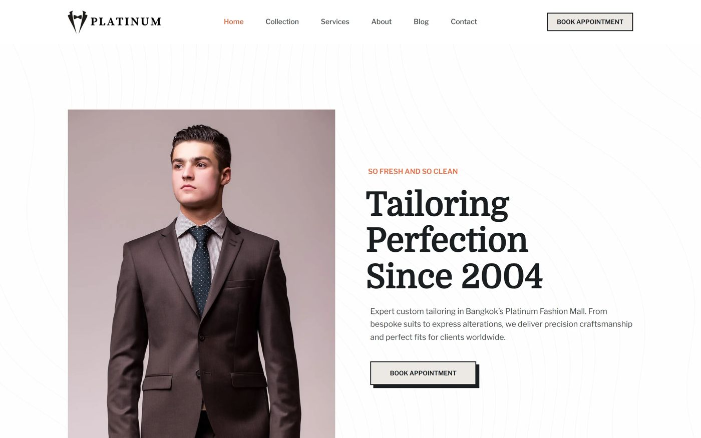

View project →Tailor Website
Web Design
Web Design
Tailor Website
- Client
- Platinum, bespoke tailor at Platinum Fashion Mall, Bangkok
- Challenge
- Limited digital presence and few channels for online enquiries from local and international customers.
- Solution
- A clean, premium, mobile-first website with clear calls-to-action, service pages and an appointment booking flow.
- Outcome
- A professional online presence that improves credibility and gives customers an easy way to discover the shop and book.
Services provided
- Website Design
- UI/UX Design
- Responsive Development
- Booking Integration
- SEO-Friendly Structure